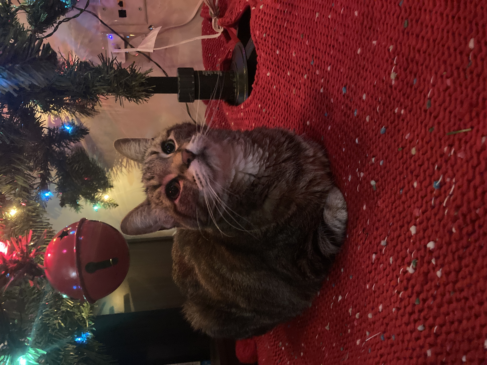

Biscuits

These are the best biscuits in town! Who could say no to these biscuits?? Look at that one biscuit above. Its lovely!
Ingredients:
- Flour
- Water
- Yeast?
- Seasoning if you want
- Cat hair
- This comes from kneading with kitty paws and it integral to the biscuits!
- Love
Steps:
- Mix the water and flour and seasoning (and yeast if that is in fact an ingredient...) in a bowl.
- Knead the dough with your tiny cat paws.
- Be sure to mix in lots of cat hair.
- Demand dinner before your dinner time (take a break in the steps for this)
- Form biscuit shaped objects with your tiny cat paws and place them on a baking sheet.
- Bake for like 8 hours at room temperature.
Back